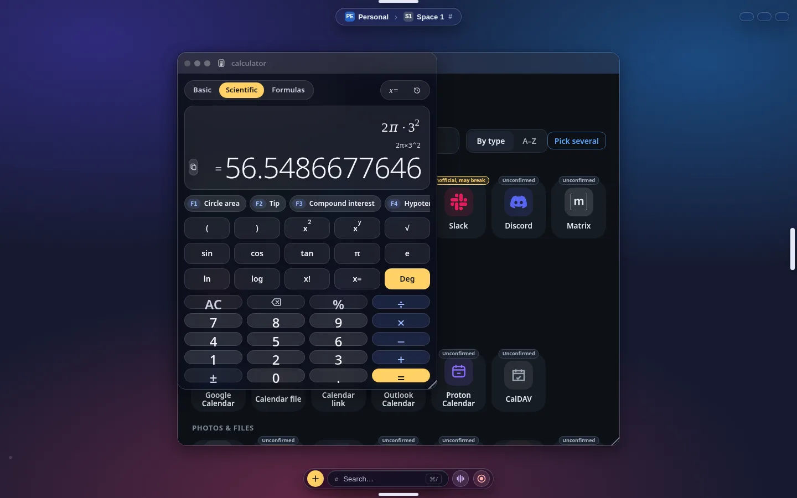
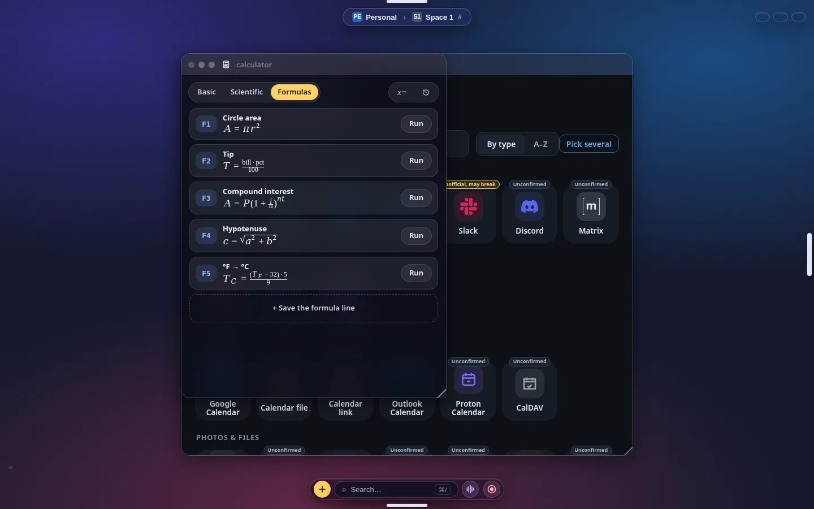

A Calculator That Reads Your Maths, Never Runs It
How the NAOMS Calculator turns what you type into a result: a real parser with operator precedence, errors you can read, and formulas you can save and run
A calculator inside a web page has a tempting shortcut: take whatever the person typed and let the browser's JavaScript engine run it as code. It is one line, and it is wrong twice over. It runs anything, not only maths. And when the maths goes wrong, the answer is NaN or Infinity, which tells you nothing.

The NAOMS Calculator never takes that shortcut. It reads your maths itself. This post shows how.
Step 1: split the line into pieces
When you type 2π×3^2, the Calculator first splits the line into pieces, called tokens: the number 2, the name π, the operator ×, the number 3, the operator ^, the number 2.
It accepts the symbols people really type. × and · mean multiply, ÷ means divide, and both − and – mean minus, as well as the plain keyboard *, / and -. A character it cannot read is not skipped. It stops and tells you where: "Can't read this at position 4", with the character named.
Step 2: build the expression by precedence
Next, the pieces become a tree, using the rules of precedence you learned at school. Powers bind tighter than multiplication, and multiplication tighter than addition. From strongest to weakest:
!(factorial) and%,^(power, read right to left, so2^3^2is2^9),- a leading minus,
×and÷,+and−.
The parser also understands multiplication you did not write out: 4a, 2π, (1+2)(3+4) and a(b) all multiply, just as they do on paper.
flowchart LR A["You type
2π×3^2"] --> B["Tokens
2 · π · × · 3 · ^ · 2"] B --> C["Tree by precedence
(2 × π) × (3 ^ 2)"] C --> D["Worked out
56.5486677646"] C --> E["Typeset as maths
on the line above"]
Step 3: work it out, and say plainly what went wrong
The Calculator then walks the tree and works out each part. Results are shown to 12 significant digits. That is an honest limit of ordinary computer numbers, and the code says so.
When something goes wrong, the answer is a sentence, not a strange number:
1/0gives "Can't divide by 0".sqrt(-1)orln(0)gives "Outside what sqrt accepts" (or ln).171!gives "Too large to show". Factorials above 170 are refused before they are tried, because they are beyond what the number type can hold.- A name with no value, such as
rbefore you have set it, gives "r has no value".
The Calculator never shows NaN or Infinity. If a result would be one of those, it is turned into one of the plain sentences above.
It never runs your text as code
The Calculator's engine never hands a string to the JavaScript compiler. This is not just a promise in a comment. A test reads the engine's own source file and fails if it finds either of the two built-ins that would run text as code. The file the tests check is the very file the app loads, so the promise is kept in what ships.
Formulas you can save and run
Because the Calculator reads your maths into a tree, it also knows which names a formula needs. The Formulas tab uses that.
It starts with five formulas you can use at once: circle area (A = pi*r^2), a tip (T = bill*pct/100), compound interest, the hypotenuse (c = sqrt(a^2+b^2)), and °F to °C. Choose Run on one and a sheet opens with one field for each input it needs. A field is filled in for you if you have already set a variable of that name.
A formula with a single input also gets a small plot. The Calculator works the formula out at about forty points across a range, such as 0 to 5 for the circle's radius, and draws the curve.

Typeset as real maths
The same tree is drawn as real mathematics above the line you type, with proper fractions, powers and roots. A name that has no value yet is tinted amber, so you can see what is missing before you press Enter. Where a system cannot draw maths, the Calculator shows the line in plain monospaced text instead, labelled as such.
The Calculator is in the Work group on the desktop and in the Android and iOS apps.
Written by AI agents from real project logs; owned and edited by Mujo.